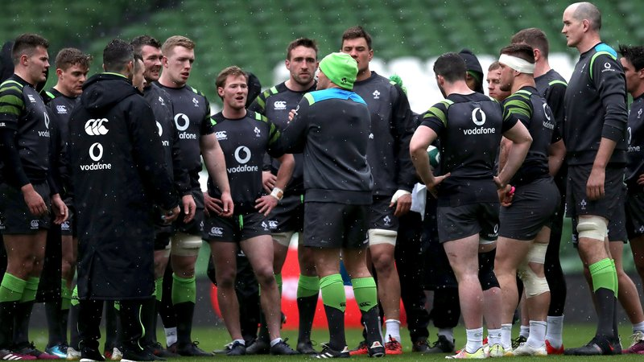

The Ireland team Joe Schmidt must pick for Scotland
04 March 2018
Ireland head coach Joe Schmidt is likely to make a number of changes for the final NatWest Six Nations home game of the competition. Gregor Townsend's side arrive on these shores looking to end grand slam dreams, derail Ireland’s championship ambitions and indeed keep alive their own title aspirations. Here is what the starting XV could look like against Scotland.
Back three
Rob Kearney looks set to continue in the 15 jersey. Jacob Stockdale is the leading try scorer in the competition. Keith Earls on the other wing is in the form of his life and has been one of Ireland’s standout performers thus far. It is a shootout between Fergus McFadden and Jordan Larmour for the 23 jersey. The veteran Leinster man got the nod against France and Wales, but was caught out on a couple of occasions last time out in Wales’ fightback.
Midfield
Chris Farrell will play no further part in Ireland’s championship tilt following his ACL injury. With Robbie Henshaw also sidelined and Jared Payne looking no closer to a return to action following migraine issues, it is a position that has been hit hard, though Garry Ringrose’s recovery from an ankle injury is timely. He is likely to slot into midfield, partnered by Bundee Aki.
Half-back
Thankfully any knocks and bruises didn’t have any significant consequences for Johnny Sexton and Conor Murray and both look in good fettle to take on the Scots. Sexton’s kicking from the tee was off colour against Wales, but he still had a commanding performance in every other facet of his play, while the always consistent Murray seamlessly slotted over a late penalty when the out-half was injured. Carbery should again provide backup at 10, while Kieran Marmion has enough in the bank to keep John Cooney off the match-day panel for the moment.
Front row
Andrew Porter was immense on his first Six Nations start, but should Tadhg Furlong come through his hamstring rehab, he will come straight back into the team to anchor the scrum. Porter is likely to knock John Ryan out of the matchday 23. Seán Cronin should continue to provide backup to team captain Rory Best at hooker. Jack McGrath and Cian Healy have alternated in the three outings thus far, and McGrath could well come back in for Healy despite his try scoring exploits against the Welsh.
Second row
Iain Henderson is expected to return to the starting team provided he can take full part in training next week. Schmidt admitted he was "close" to playing against Wales, and he could well partner James Ryan with Devin Toner dropping to the bench in what would be a repeat of the selection made by the head coach for the opening game in Paris.
Backrow
Eyebrows would be raised if Schmidt decided in a change of personnel here. CJ Stander was rested against Italy, coming on at half-time, but resumed starting duties against Wales. Jack Conan should continue as understudy at number eight, with no changes expected at openside or blindside flanker. Peter O’Mahony gets through most of his work in an understated manner and completes a well-balanced and effective backrow.
Possible Ireland team v Scotland:
Rob Kearney; Keith Earls, Garry Ringrose, Bundee Aki, Jacob Stockdale; Johnny Sexton, Conor Murray; Tadhg Furlong, Rory Best, Jack McGrath, Iain Henderson, James Ryan; Peter O’Mahony, Dan Leavy, CJ Stander
Replacements:
Seán Cronin, Cian Healy, Andrew Porter, Devin toner, Jack Conan, Kieran Marmion, Joey Carbery, Jordan Larmour